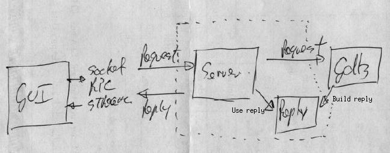

serverGDB Architecture
Jim Blandy set out a proposal for a GDB server architecture based
around a formal API. This propsal presents an alternative design
that addressed some of the limitations that Jim identified in Stan's
Headless GDB architecture.
One of the limitations that Jim identified was:
Finally, amending GDB to produce two kinds of output
increases the complexity of the code. In contrast, imposing a
well-defined interface between GDB's core functionality and its user
interface reduces total complexity, by segregating the code into
separate modules with well-defined interactions.
while for Stan's part, he argues that:
[...] the CLI effectively defines a robust protocol -
by being text-based, encoding and byte-order issues go away, the
command processor already has error-handling built into it, and the
user manual constitutes a fairly precise specification of the
protocol's "messages".
The architecture below incorporates a design that both addresses Jim's
concern of code duplication while at the same time retaining the
flexibility of an interface based around the existing command line.

This architecture breaks the rendering of data into two distinct phases:
-
The GDB core which builds a description of the Reply (data).
-
The Sever which transforms reply into a form suitable for the corresponding
user interface.
For a CLI that would involve the simple display of the reply in textual
form.
For a remote GUI, a Server implementation would serialized the Reply
(data) before transmitting it to the remote GUI.
Since the modified GDB would exploit a single set of build operations to
construct a results, Jim's concern over the need to maintain parallel code
streams each producing similar output is addressed. Similarly, by
initially implementing a GUI Server that serialized replies into text,
the benefits that Stan identifies would be present.
Importantly, the architecture is not limited to just a CLI based server.
If the Server was replaced with TK/TCL, for instance, GDB would be able
to build TCL data structures directly.
Problems and limitations
This architecture, is not with out potential limitations and risks.
Those immediately identifiable include:
-
This architecture involves significantly more work then the alternative,
streamGDB.
Any perceived long term gains, must be balanced against the more immediate
need to complete the project in the time available.
-
Further analysis is required to confirm the feasibility of the design.
A prototype changing just the code known to be problematic to GDBtk
(ex. register display) is needed.
Further reading
Design Patterns, Gamma et.al. "Builder", page 97.
{kind=link}